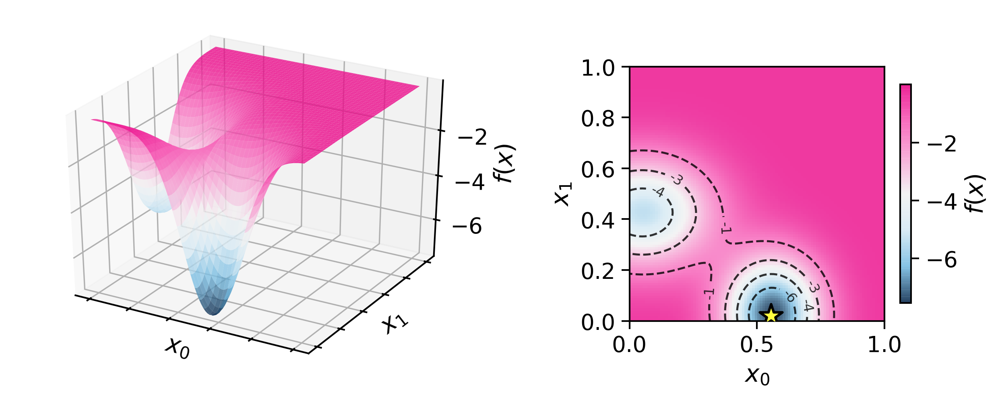

K2¶
-
class
olympus.surfaces.K2(noise=None)[source] Gaussian Mixture surface derived from the GaussianMixture generator using
random_seed=8611.- Parameters
noise (Noise) – Noise object that injects noise into the evaluations of the surface. Default is None.
Methods
run(params[, return_paramvector])Evaluate the surface at the chosen location.
-
run(params, return_paramvector=False) Evaluate the surface at the chosen location.
- Parameters
params (array) – Set of input parameters for which to return the function value.
return_paramvector (bool) – Whether to return a
ParameterVectorobject instead of a list of lists. Default is False.
- Returns
function values evaluated at the chosen locations.
- Return type
values (ParameterVector)